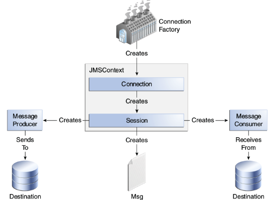

概述
本文在ActiveMQ 寻根究低 - JMS 规范概述一问的基础上，探究点对点模式的具体变成实现方案，以及点对点模式在实际应用的的具体场景。
JMS 程序设计模式
JMS 程序的模式主要是给予PTP 和 Pub/Sub 配置一些参数的不同来应用到不同的场景中。根据具体的业务对性能、对数据的安全性等再进行最终方案的选型。通用的结构如下图:

点对点(PTP)模式的实现
PTP 模式生产者
非事务方式的生产者
非事务的生产者需要将connection.createSession(transacted, acknowledge) 的第一个参数设置为FALSE。第二个参数指明的消息接受者的应答方法。
1 2 3 4 5 6 7 8 9 10 11 12 13 14 15 16 17 18 19 20 21 22 23 24 25 26 27 28 29 30 31 32 33 34 35 36
| class PTPSyncQueueProducer implements Runnable { private final static Logger LOG = LoggerFactory.getLogger(PTPSyncQueueProducer.class); Connection connection; Session session; Destination destination; MessageProducer messageProducer; @Override public void run() { int i = 0; while (true) { try { connection = ConnectionUtils.getConnectionFactory().createConnection(); connection.start(); session = connection.createSession(Boolean.FALSE, Session.AUTO_ACKNOWLEDGE); destination = session.createQueue("PTPSyncQueueProducer"); messageProducer = session.createProducer(destination); ObjectMessage objectMessage = session.createObjectMessage(); objectMessage.setObject(new Obj(++i, "littler Bai")); messageProducer.setDeliveryMode(DeliveryMode.NON_PERSISTENT); messageProducer.setPriority(Message.DEFAULT_PRIORITY); messageProducer.setTimeToLive(Message.DEFAULT_TIME_TO_LIVE); messageProducer.send(objectMessage); LOG.info("send {}", i); TimeUnit.SECONDS.sleep(5); } catch (JMSException e) { ConnectionUtils.close(messageProducer, session, connection); } catch (InterruptedException e) { e.printStackTrace(); } } } }
|
基于事务的生成者
基于事务的生产者。只有再事务提交时，消息才已打包的方式一起发送到JMS Provider。
1 2 3 4 5 6 7 8 9 10 11 12 13 14 15 16 17 18 19 20 21 22 23 24 25 26 27 28 29 30 31 32 33 34 35 36
| public void transactedProducer() { try { connection = ConnectionUtils.getConnectionFactory().createConnection(); connection.start(); session = connection.createSession(Boolean.TRUE, Session.AUTO_ACKNOWLEDGE); destination = session.createQueue("PTPSyncQueueProducer"); messageProducer = session.createProducer(destination); messageProducer.setDeliveryMode(DeliveryMode.NON_PERSISTENT); messageProducer.setPriority(Message.DEFAULT_PRIORITY); messageProducer.setTimeToLive(Message.DEFAULT_TIME_TO_LIVE); for (int i = 0; i < 10; i++) { ObjectMessage objectMessage = session.createObjectMessage(); objectMessage.setObject(new Obj(i, "littler Bai")); messageProducer.send(objectMessage); LOG.info("send {}", i); } System.out.println("begin sleep"); TimeUnit.SECONDS.sleep(10); session.commit(); } catch (JMSException e) { try { session.rollback(); } catch (JMSException ex) { ex.printStackTrace(); } e.printStackTrace(); } catch (InterruptedException e) { e.printStackTrace(); } finally { ConnectionUtils.close(messageProducer, session, connection); } }
|
PTP 模式消费者
基于阻塞的消费者
基于阻塞的消费者采用MessageConsumer.receive(timeout) 方法来阻塞当前线程，循环获取监测的Destination 的消息。
1 2 3 4 5 6 7 8 9 10 11 12 13 14 15 16 17 18 19 20 21 22 23 24 25 26 27 28 29 30 31
| class PTPQueueCustomer { Connection connection; Session session; Destination destination; MessageConsumer messageConsumer; public void consume() { try { connection = ConnectionUtils.getConnectionFactory().createConnection(); connection.start(); session = connection.createSession(Boolean.FALSE, Session.AUTO_ACKNOWLEDGE); destination = session.createQueue("PTPSyncQueueProducer"); messageConsumer = session.createConsumer(destination); while (true) { Message message = messageConsumer.receive(1000); if (message instanceof ObjectMessage) { ObjectMessage objectMessage = (ObjectMessage) message; System.out.println(objectMessage.getObject()); } } } catch (JMSException e) { e.printStackTrace(); } finally { ConnectionUtils.close(messageConsumer, session, connection); } } public static void main(String[] args) { new PTPQueueCustomer().asyncConsume(); } }
|
基于MessageListener 的异步消费者
基于MessageListener 的异步消费者需要实现该接口，并在MessageConsumer.setMessageListener(listener) 方法上注册。
1 2 3 4 5 6 7 8 9 10 11 12 13 14 15 16 17 18 19 20 21 22 23 24 25 26 27 28
| class QueueMessageListener implements MessageListener { @Override public void onMessage(Message message) { if (message instanceof ObjectMessage) { ObjectMessage objectMessage = (ObjectMessage) message; try { System.out.println(objectMessage.getObject()); } catch (JMSException e) { e.printStackTrace(); } } } } public void asyncConsume() { try { connection = ConnectionUtils.getConnectionFactory().createConnection(); connection.start(); session = connection.createSession(Boolean.FALSE, Session.AUTO_ACKNOWLEDGE); destination = session.createQueue("PTPSyncQueueProducer"); messageConsumer = session.createConsumer(destination); messageConsumer.setMessageListener(new QueueMessageListener()); } catch (JMSException e) { e.printStackTrace(); } }
|
总结
虽然PTP 模式，规定了一个消息（Message）只能由一个消费者消费，但是并不意味着一个PTP 的Destination 只能连接一个消费者。因此，PTP 模式典型应用由：
- 应用到将同一件事情分散到多个处理者。
- 订单处理系统，如定时抢购，银行纪念币抢兑
- 一对一系统间调用的解耦
- 基于PTP 实现
request-response 应答模式
参考引用
- ActiveMQ 寻根究低 - JMS 规范概述
本文章采用知识共享署名 2.5 中国大陆许可协议进行许可。
欢迎转载，但转载请注明来自张兆玉，并保持转载后文章内容的完整。本人保留所有版权相关权利。
本文链接：https://zhangzhaoyu.github.io/2016/10/21/jms-activemq-queue-md/